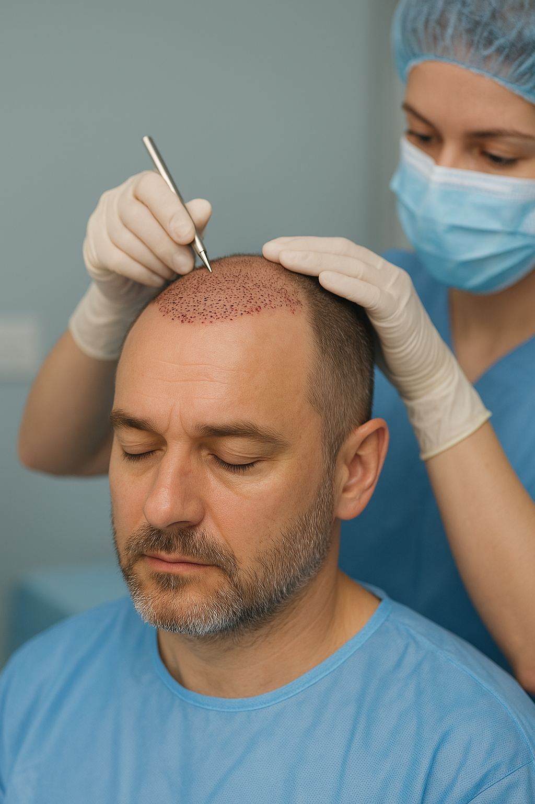
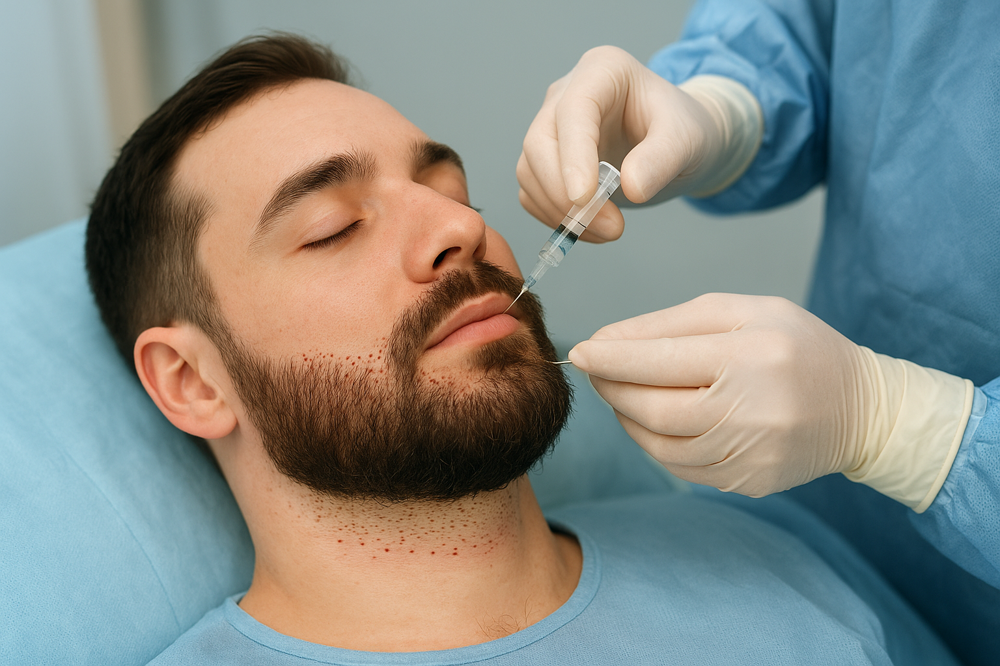
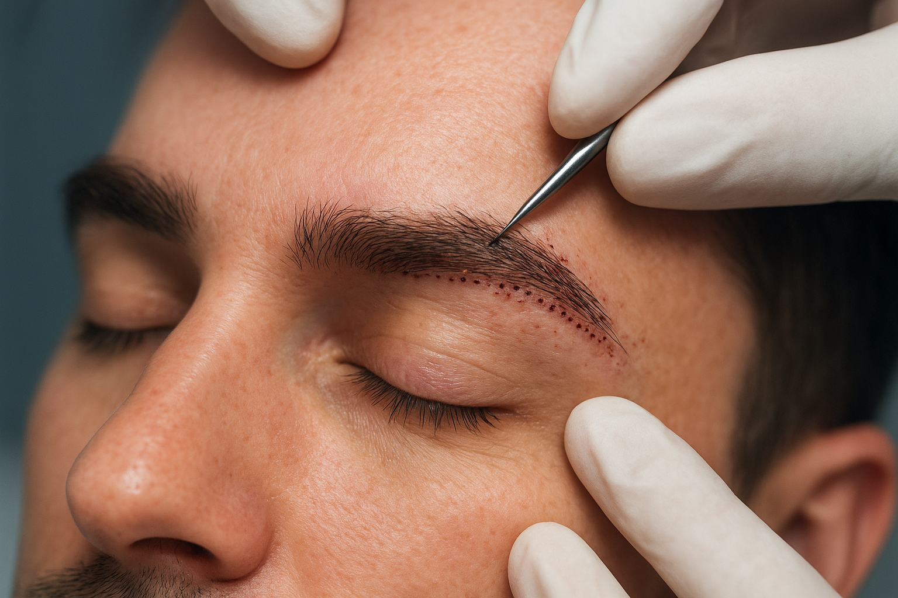
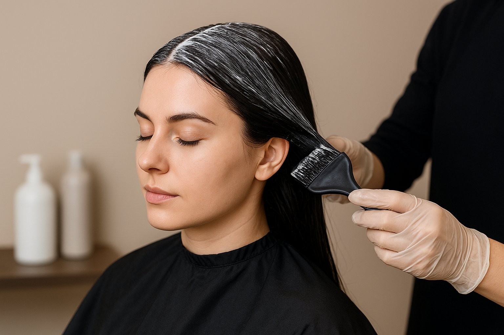

Transplante de Cabelo (Masculino e Feminino)

O Transplante Capilar realizado pela Clínica Doutor Cabelo oferece resultados naturais e permanentes para homens e mulheres que desejam recuperar a densidade dos fios e corrigir áreas de calvície ou falhas.
Utilizamos técnicas modernas, como a FUE (Follicular Unit Extraction), que garante mínima cicatriz, recuperação rápida e alta precisão na distribuição dos fios.
Cada procedimento é planejado individualmente, respeitando o desenho natural da linha capilar, o tipo de cabelo e as características do paciente para alcançar um resultado estético harmônico, discreto e duradouro.

O Transplante de Barba é indicado para quem deseja preencher falhas, deixar o contorno mais definido ou conquistar uma barba completa e uniforme.
Através da técnica FUE, os fios são retirados da área doadora e implantados com cuidado para acompanhar a direção e inclinação naturais da barba.
O procedimento proporciona aparência natural, maior simetria facial e liberdade para modelar e aparar a barba como preferir após o período de crescimento.
Transplante de Sobrancelhas

O Transplante de Sobrancelhas devolve volume, definição e naturalidade para quem sofre com sobrancelhas ralas, assimétricas ou que perderam fios ao longo do tempo.
Com instrumentos delicados e técnicas de precisão, os fios são implantados um a um, respeitando o ângulo e o sentido originais do crescimento.
O resultado é uma sobrancelha mais cheia, expressiva e alinhada ao formato do rosto, garantindo harmonia e rejuvenescimento da expressão.

A Clínica Doutor Cabelo também oferece uma linha completa de tratamentos capilares clínicos e preventivos para fortalecimento dos fios, controle da queda e estímulo do crescimento.
Entre as terapias disponíveis estão:
• Laser capilar;
• Microinfusão de medicamentos (MMP);
• Intradermoterapia;
• Tratamentos para dermatites e oleosidade;
• Protocolos personalizados para fortalecimento e regeneração dos fios.
Cada tratamento é indicado após avaliação especializada, garantindo soluções eficazes e adaptadas à necessidade de cada paciente.